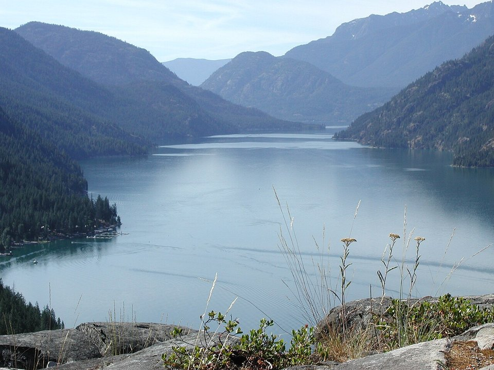

Downtown · Beach resort
Campbell’s Resort
A family-run lakefront resort on its own beach since 1901.
Official details for Campbell’s ResortSun, wine and a 50-mile lake.
Lake Chelan is a deep, 50-mile glacial lake reaching into the North Cascades, with more than 300 days of sun a year and wineries on the hillsides above the water. Land at Lake Chelan Airport above town, stay at Campbell’s Resort on the beach, taste at Tsillan Cellars and Vin du Lac, and take the Lady of the Lake boat up the lake to Stehekin, a village you can reach only by boat, floatplane or on foot.

In our plane it’s a short flight.
Where we’re staying Dinner Things to do The plan
I’ll handle the flight planning; you handle the fun planning! Pilot view
Time illustration: direct distance at 150 KTAS plus 15 minutes for departure and arrival, matching the discovery page. Use ForeFlight for your actual flight plan.
Check the weekend weather at both ends → Flight category, your minimums and the crosswind on the best runway.
More in Aviation & getting around below. Crew cars change often: call the FBO before you go. How to have a rental car waiting at the FBO · Know something we missed? Tell us.
S10, Lake Chelan Airport, is a non-towered city airport at 1,263 feet with a 3,506-foot runway, about five minutes from downtown.
Lake Chelan Airport, Chelan, WA
A short runway; a road crosses near the Runway 20 approach. Parachute jumping on the field from May to October. For a longer runway, Pangborn Memorial (KEAT) in Wenatchee is 45 minutes away. No live fuel price is shown.
Inland Northwest flying: hot, dry summers with afternoon winds and wildfire smoke, cold winters with fog and low ceilings in the valleys, and the Cascades to the west with icing in winter clouds. About 2020 nm from Myrtle Beach: two long days each way with several fuel stops. Plan a week, or overnight on the way out and back.
Rates and availability need travel dates. Summer weekends book far ahead.
A family-run lakefront resort on its own beach since 1901.
Official details for Campbell’s ResortTuscan-style rooms and a winery above the lake.
Official details for Siren Song Vineyard EstateUpscale vacation homes near Manson’s waterfront.
Official details for The Lodge Lake ChelanLakeside condos with decks, a pool and boat rentals.
Official details for Petersons WaterfrontA lakefront resort with a beach and pool.
Official details for Darnells ResortLake rentals and inns.
Visit Lake Chelan for More places to stayPrices and availability for your dates, through our partner Stay22. This is an affiliate link: we may earn a commission at no cost to you. The picks above are never paid.
Reserve weekend dinners.
Italian-inspired dinner and wine above the lake.
Official details for Tsillan CellarsA bistro and tasting room overlooking the lake.
Official details for Vin du LacRestaurants around the lake.
Visit Lake Chelan for More restaurantsThe Stehekin boat takes most of a day.
This prototype links to the local visitor site. It does not yet match events to your travel dates.
Hot, sunny days on the water.
Visit Lake Chelan for Lake seasonWine country in harvest season.
Visit Lake Chelan for HarvestReduced winter schedule.
Lady of the Lake for Stehekin boatCheck the local calendar when choosing a weekend, and confirm dates and tickets with the organizer.
A sample Chelan weekend. This is a two-day flight each way; plan a week. No bookings or availability confirmed.
Land at S10 mid-morning.
Lunch in town.
A short walk, then back to the airport.
Land at S10, subject to weather, density altitude and your actual flight plan.
The beach at Campbell’s.
Dinner at Tsillan Cellars.
The boat to Stehekin.
Lunch in Stehekin, then back by boat.
Dinner in town.
Lunch at Vin du Lac.
Compute takeoff performance and allow time at the FBO.
Inland afternoons get hot and gusty; leave in the morning.
The main sight.
Explore.
Dinner in town.
This guide is part of a multi-stop flying trip. Set your dates and aircraft, then swap stops to make it your own.
These details make the difference between an appealing list and a usable getaway.
Lodging and the boat.
About 2,020 nm from Myrtle Beach: two long days each way.
3,506 feet; use KEAT if needed.
June to September.
Picks and links reviewed by WingAway Weekends. Hours, prices, menus and availability change often, so confirm directly with each place before booking. Spotted something out of date, or have a favorite we missed? Email us at hello@wingawayweekends.com.
WingAway Weekends helps you discover the destination. Use ForeFlight and current official aviation information for route, performance, weather, NOTAMs and preflight decisions. Flight planning and PIC responsibility stay with the pilot.